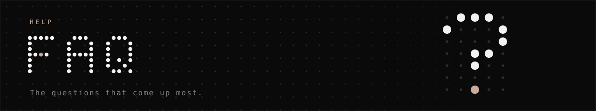

FAQ
The questions that come up most, with short answers.
Installing
Does it need administrator rights?
No, and it should not be run as administrator: Scoop refuses to. The one exception is Windhawk, which asks for permission itself when you install it.
Does it work on Windows 10?
It is made and tried on Windows 11. The bar and tiling will probably work on Windows 10; the taskbar parts are untested there.
Can I install only part of it?
Yes. Choose let me choose in the first menu, or run .\install.ps1 -Preset Core for just komorebi, YASB and the settings app.
Is it safe to run twice?
Yes. Installed programs are skipped, unchanged files are left alone, and anything replaced is kept as a backup.
What does it send over the network?
The installer downloads Bento itself from GitHub and the programs through Scoop. Bento has no accounts and no telemetry.
Using it
How do I change the accent colour?
Open Bento Settings, then Lucent. Pick Windows' own accent, a preset or your own colour, press Apply now. See Lucent.
How do I turn Lucent off?
Switch the theme off on the same page. Every program goes to its monochrome palette instead of keeping the accent.
The bar disappeared.
Press Alt + Shift + O to show it. If game mode left things off, run game-mode.ps1 off from ~\.config\komorebi, or use the tray icon of the scroll script.
A window will not tile, or tiles when it should float.
Press Alt + T to float or tile it for now. To make it permanent, add a rule to applications.json: see Configuration.
Can I use my own wallpapers?
Yes. The six included ones are only a start. Pick any image on the Wallpaper page; Lucent follows your Windows accent after the wallpaper changes.
The scroll hotkeys fight with a game.
That is what game mode is for. It switches them off when a game runs, and you can also switch them off from the tray icon.
Lucent
A program did not change colour.
Some programs read their theme only at start (Zen, Helium, File Pilot, OBS, Spotify): use Restart apps. Others need a one-time pick of the theme: see the per-program steps.
Can you add my favourite program?
Probably. Open an issue on GitHub, or see Contributing to add it yourself.
Licences
Can I use Bento commercially?
Bento is MIT, so yes. But komorebi, which Bento depends on, has its own licence with terms for commercial use. Read Credits and licences.
Does the license of Bento cover YASB and komorebi?
No. Each project keeps its own licence, and Bento does not change them.